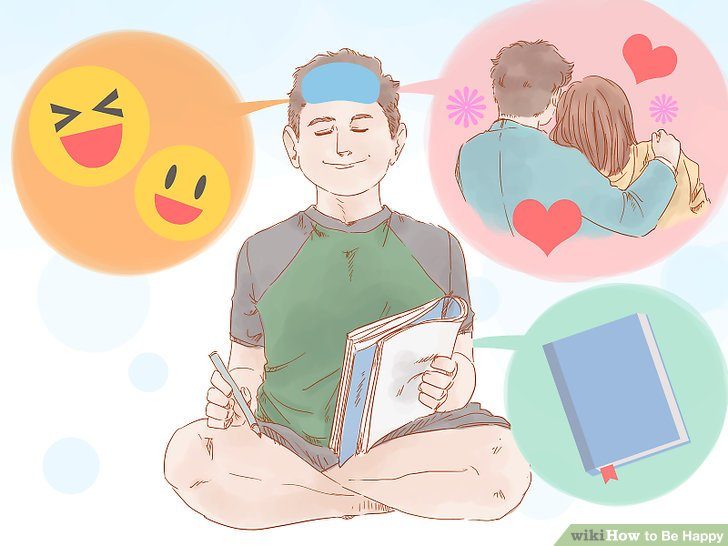
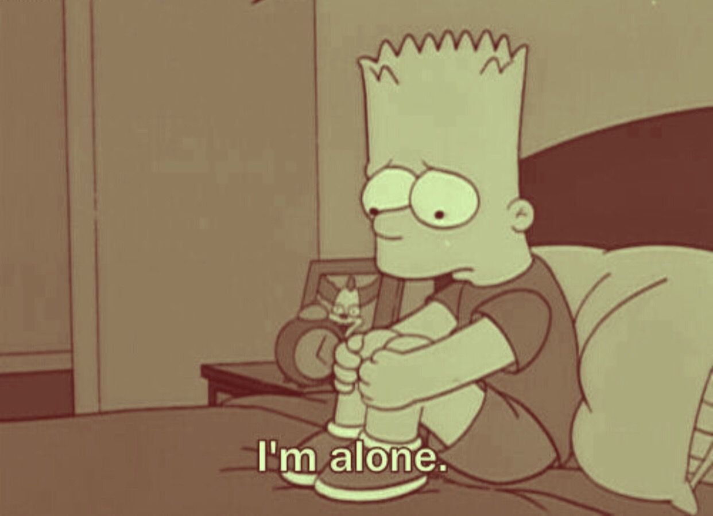

About Ramesh Kumar
My name is Ramesh Kumar and I am Student, Android Developer and Badminton beginner.
My classes in this year
- CS472 - Web Programming
- CS435 - Algorithms
- CS545 - Web Application Architecture
- CS572 - Modern Web Applications
My favorite movies
I am fond of movies especially action, so below are the my worth watching movies
- John Wick(IMDB)
- Directors
- Chad Stahelski, David Leitch
- Genre
- Action/Crime/Thriller (More)
- Tagline
- An ex-hitman comes out of retirement to track down the gangsters that killed his dog and took everything from him.
- Plot Outline
- egendary assassin John Wick (Keanu Reeves) retired from his violent career after marrying the love of his life. Her sudden death leaves John in deep mourning. When sadistic mobster Iosef Tarasov (Alfie Allen) and his thugs steal John's prized car and kill the puppy that was a last gift from his wife, John unleashes the remorseless killing machine within and seeks vengeance. Meanwhile, Iosef's father (Michael Nyqvist) -- John's former colleague -- puts a huge bounty on John's head.
- The Purge (IMDB)
- Baahubali 2: The Conclusion (IMDB)
My moods
Happy 
Sad 
Fun facts about my neighbors
- Innocent : He is very innocent by name and by behave.
- Zia : His service in Ping-Pong like a that everyone can hit smash.